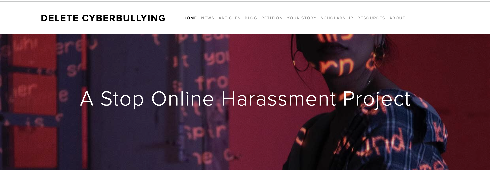
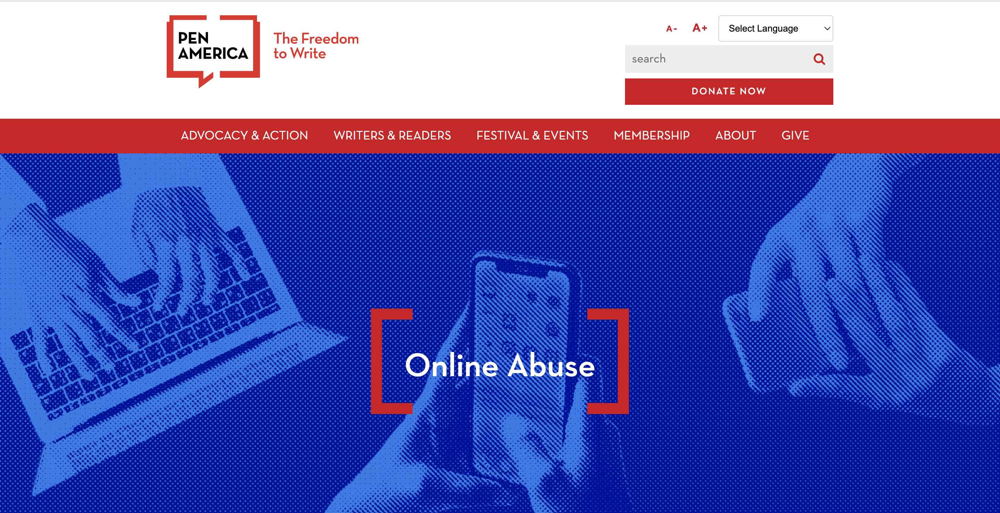
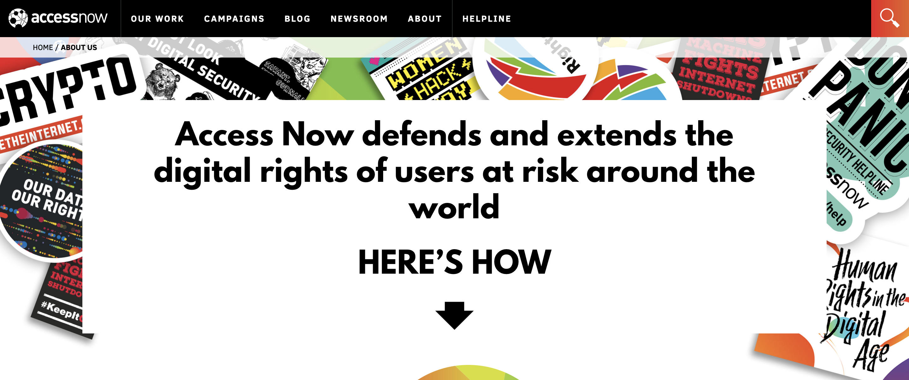

Resource List
- Delete Cyberbullying
-

https://www.endcyberbullying.net/
The website created by a group called ‘Delete Cyberbullying’ needs to be acknowledged, due to its similarity with our project. This website aims to educate people about cyberbullying through many different methods, such as news about cyberbullying, social media guides, news, etc. (Delete Cyberbullying) While this website is similar to the project that we aim to create which may serve as a model, this website lacks proper design that can lead people to access the features inside the webpage. The links on the main page have been expired or removed, the news has not been updated from 2021, and the navigation bars look complicated for most users to use. We aim to create a simple, updated, and more accessible website that will be more user-friendly, and educate people about cyberbullying more effectively. We hope to impact people in not only the UW community but also people in the world so we can stop cyberbullying adequately.
- PEN America
-

https://pen.org/issue/online-abuse/
This is a group called PEN America, where they promote people's freedom to write, while protecting people from abuse. They also educate people about online abuse through many mediums such as projects and commentaries, while suggesting experts people may connect to if they have any questions or concerns regarding online abuse.
- Equality lab
-

https://www.equalitylabs.org/digitalsecurityresource#security-101
This is an organization called Equality Lab, where they give several resources and training for digital security. People may reach out for help on any issues regarding harms that may result from digital security.
- Access now
-

https://www.accessnow.org/about-us/
This is organization called Access Now, where they also give helps regarding privacy, freedom of expression, digital security, business and human rights, and net discrimination. People also can achieve help from here, including global hotline that can reach out to experts in these areas.